Подбери промпт для своей задачи в один клик!
ПРОМТЗИЛЛА
Библиотека промтов на все случаи жизни!
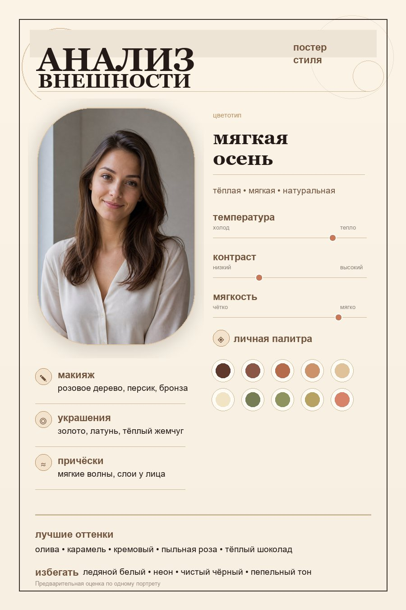
Анализ фотоКак сделать постер с анализом внешности онлайн с помощью ИИ
Нейросеть онлайн анализирует портрет и собирает постер внешности в стиле Vogue: цветотип, палитру, макияж, украшения, причёски и короткие рекомендации по образу.
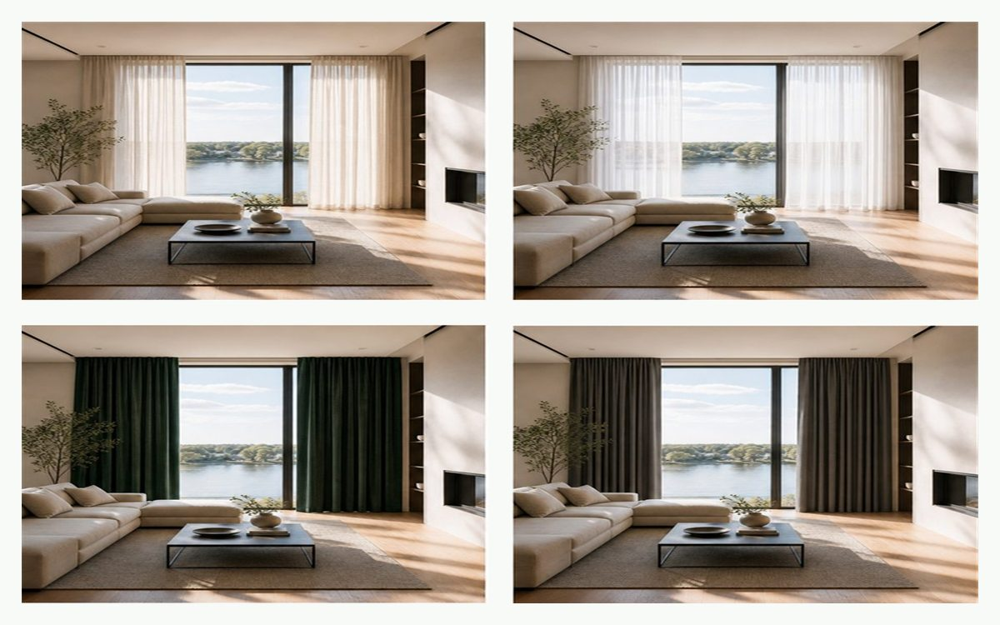
ИнтерьерКак подобрать шторы онлайн с помощью ИИ
ИИ и нейросеть онлайн помогут подобрать шторы к интерьеру: загрузите фото комнаты и получите премиальную визуальную примерку с несколькими реальными вариантами тканей, цветов и стилей без текста на картинке.
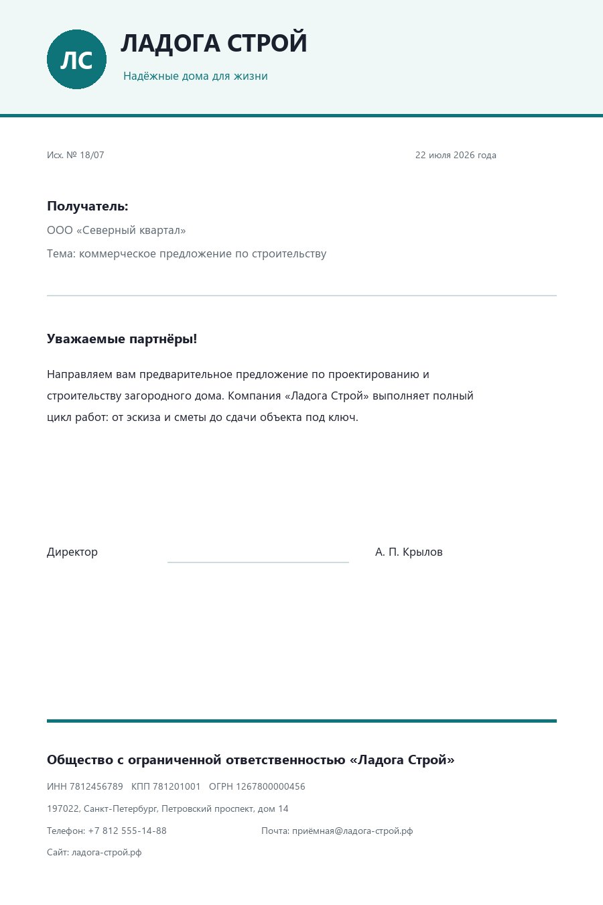
ДизайнКак сделать фирменный бланк с помощью нейросети
Нейросеть и ИИ онлайн помогут сделать фирменный бланк: логотип, реквизиты, адрес, контакты, шапку, подвал и аккуратный деловой стиль.
 Дизайн
Дизайн
Как сделать фамильный герб с помощью ИИ
ИИ и нейросеть онлайн помогут сделать фамильный герб: щит, символы семьи, цвета, девиз, орнаменты и аккуратную геральдическую композицию.
 Внешность
Внешность
Как поменять цвет ногтей на фото с помощью ИИ
ИИ и нейросеть онлайн меняют цвет ногтей на фото: можно примерить лак, гель-лак, френч или другой оттенок, не трогая кожу, руки и фон.
 Маркетплейсы
Маркетплейсы
Как сделать карточку товара для маркетплейса через нейросеть
Загрузи фото товара онлайн — ИИ и нейросеть помогут собрать яркую карточку для маркетплейса: крупный товар, цена, скидка, преимущества и понятный продающий акцент.
 Фото
Фото
Как сделать мультперсонажа из фотографии с помощью ИИ
Загрузи фото онлайн — ИИ или нейросеть превратит человека в мультперсонажа: в стиле «Симпсонов», LEGO, аниме, 3D-анимации, комикса и других очевидных вариантов.
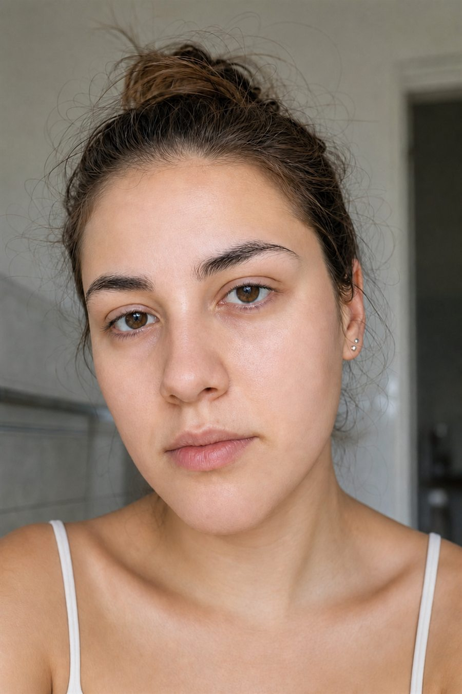
ВнешностьКак убрать прыщи на фото онлайн через нейросеть
Загрузи портрет онлайн — ИИ или нейросеть уберёт прыщи и покраснения на фото, сохранив естественную кожу и черты лица.
ФотоКак поменять фон на фото с помощью ИИ
Загрузи фото онлайн — ИИ или нейросеть заменит фон, сохранив человека, свет, края волос и естественный вид кадра.
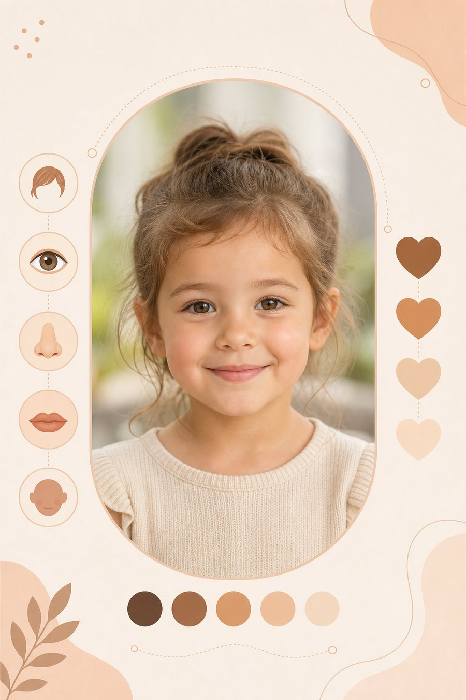
СемьяКак будет выглядеть ребёнок по фото родителей через ИИ
Загрузи фото родителей онлайн — ИИ или нейросеть создаст мягкий визуальный прогноз внешности ребёнка без обещания точного результата.
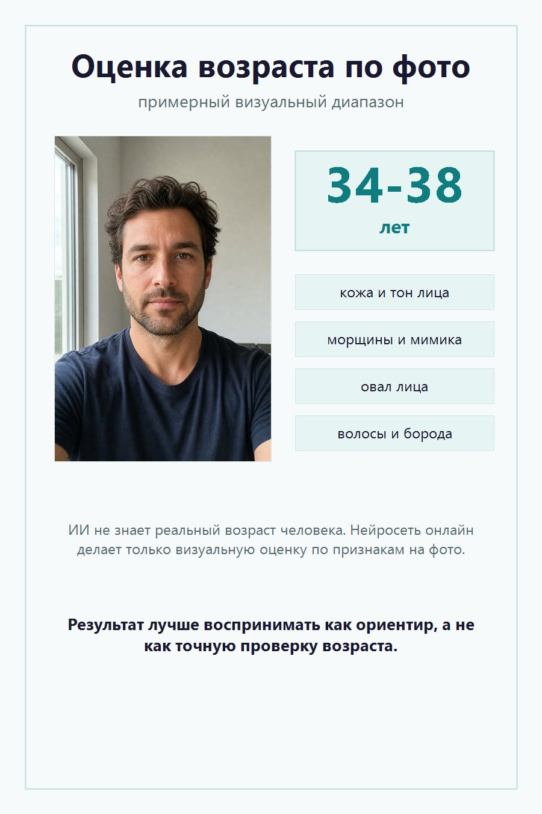
Анализ фотоКак узнать возраст по фото онлайн через нейросеть
Загрузи фото онлайн — ИИ и нейросеть помогут визуально оценить примерный возраст по лицу, мимике, коже и общему виду.
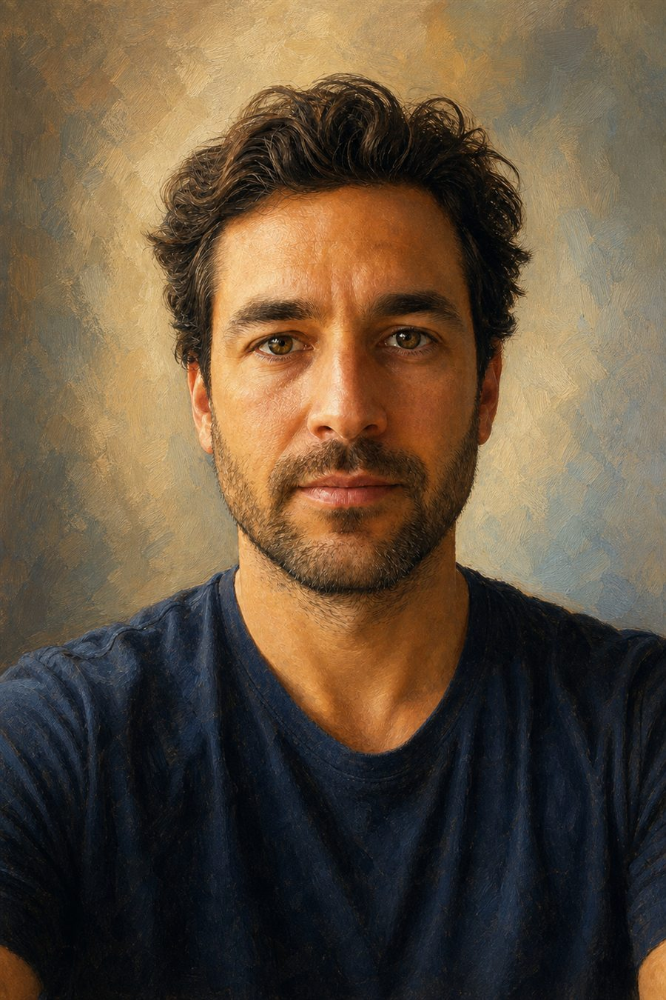
ФотоКак сделать портрет из своего фото с помощью ИИ
Загрузи своё фото онлайн — ИИ или нейросеть превратит его в аккуратный художественный портрет, сохранив лицо, свет и узнаваемые черты.
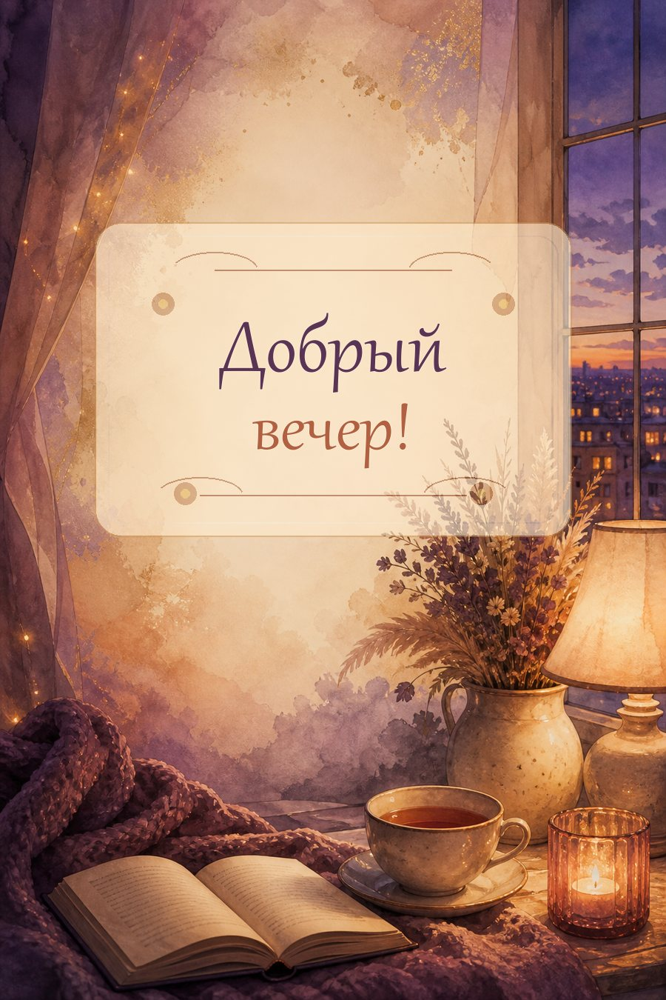
ПодаркиКак создать открытку «Добрый вечер» через нейросеть
Нейросеть создаёт красивую вечернюю открытку: тёплый свет лампы, чай, книга, свеча, окно с сумерками и аккуратная надпись «Добрый вечер!». Подходит для работы онлайн с ИИ и нейросетью.
 Подарки
Подарки
Как создать открытку «С добрым утром» через ИИ
ИИ создаёт красивую утреннюю открытку: мягкий свет, цветы, чашка кофе или чая, уютное окно и аккуратная надпись «С добрым утром!». Подходит для работы онлайн с ИИ и нейросетью.
 Подарки
Подарки
Как создать открытку «С Днём матери» по своему фото через нейросеть
ИИ оформляет семейное фото как витиеватую рисованную открытку ко Дню матери с каллиграфической надписью, цветочным орнаментом, рамкой и мягким праздничным дизайном. Подходит для работы онлайн с ИИ и нейросетью.
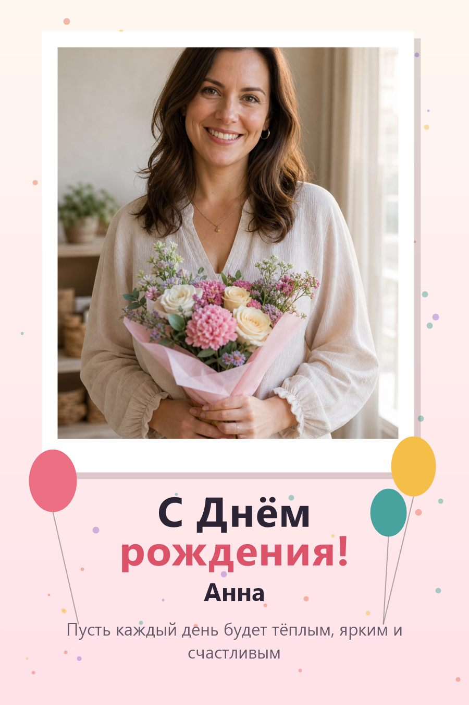
ПодаркиКак создать открытку «С Днём рождения» по своему фото через ИИ
ИИ превращает личное фото в праздничную открытку с поздравлением, аккуратной типографикой, шарами и конфетти. Подходит для работы онлайн с ИИ и нейросетью.
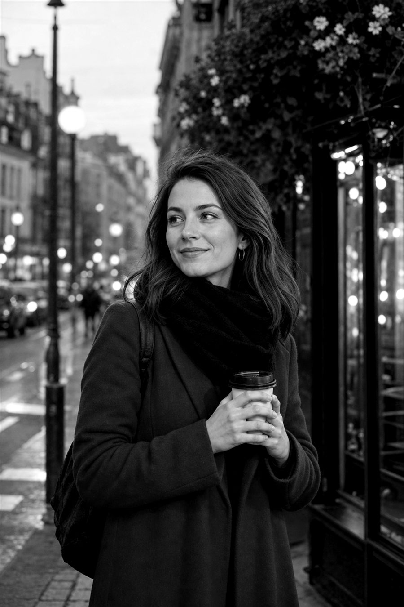
ФотоКак сделать своё фото чёрно-белым с помощью нейросети
ИИ превращает цветное фото в выразительный чёрно-белый кадр, сохраняя детали, свет, фактуру кожи и естественный контраст. Подходит для работы онлайн с ИИ и нейросетью.
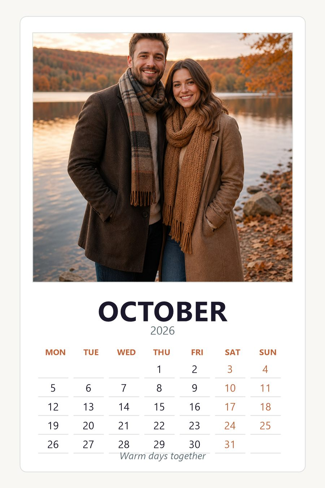
ПодаркиКак сделать календарь из своего фото через ИИ
ИИ оформляет личное фото как календарную страницу: добавляет месяц, год, сетку дней и аккуратный дизайн для печати или открытки. Подходит для работы онлайн с ИИ и нейросетью.
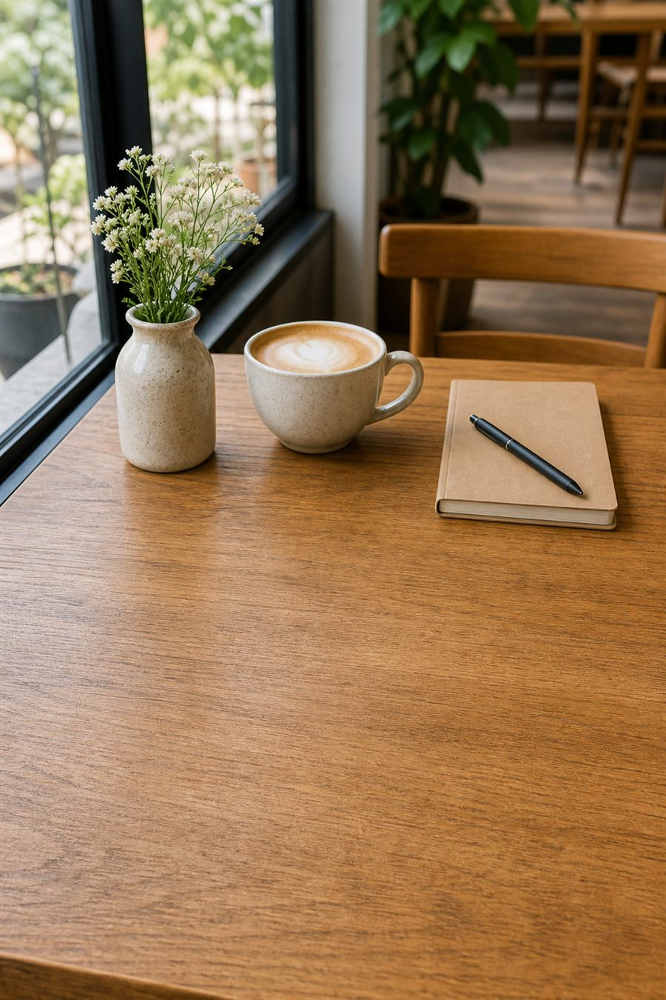
ФотоКак удалить текст с фото онлайн с помощью ИИ
ИИ удаляет лишнюю надпись с фото и аккуратно восстанавливает фон под текстом: текстуры, свет, тени и детали кадра. Подходит для работы онлайн с ИИ и нейросетью.
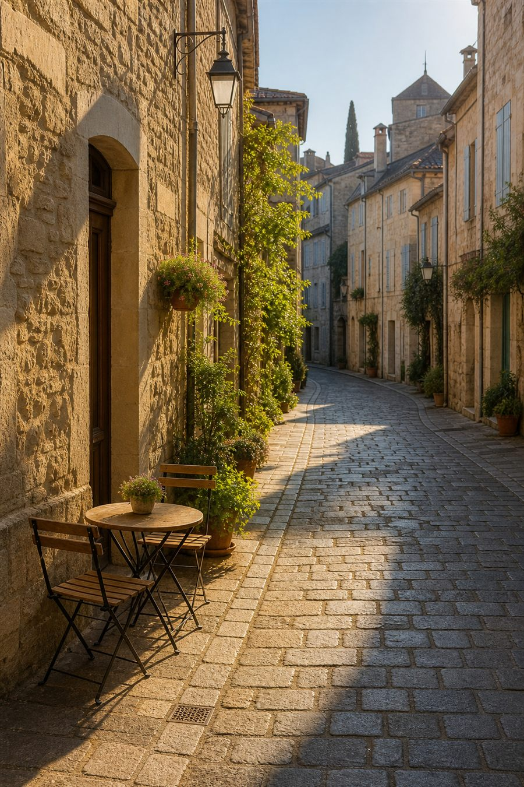
ФотоКак удалить водяной знак с фото через нейросеть
ИИ восстанавливает область демонстрационного водяного знака на собственном фото или изображении, которое разрешено редактировать. Подходит для работы онлайн с ИИ и нейросетью.
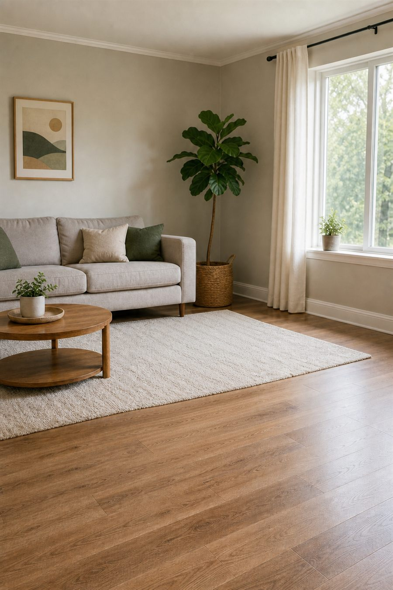
ФотоКак удалить объект с фото через ИИ
ИИ удаляет выбранный объект с фото и естественно восстанавливает фон, свет, тени и текстуры вокруг места удаления. Подходит для работы онлайн с ИИ и нейросетью.
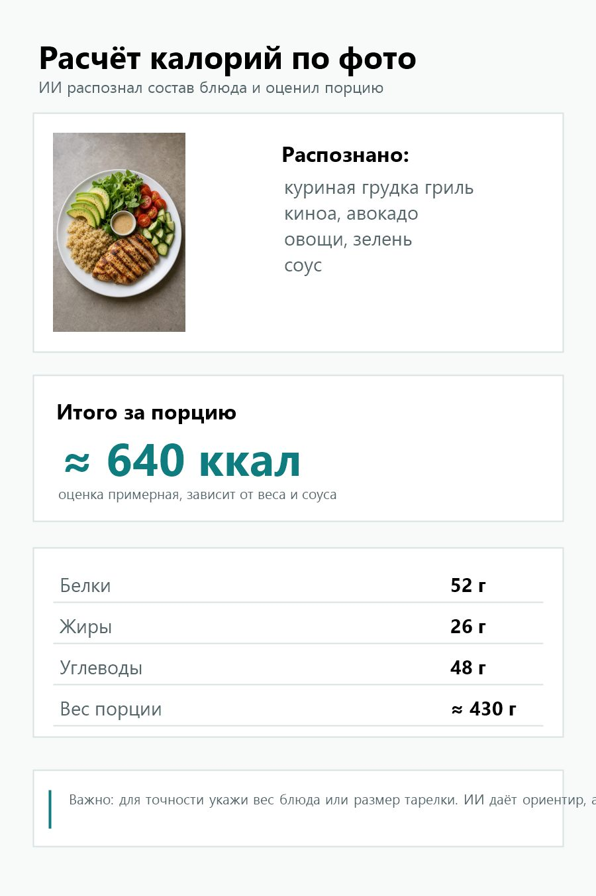
Анализ фотоКак посчитать калории по фото еды с помощью ИИ
ИИ распознаёт блюдо по фото, оценивает вес порции, калории и БЖУ. Готовые RU и EN промпты для аккуратного анализа еды. Подходит для работы онлайн с ИИ и нейросетью.
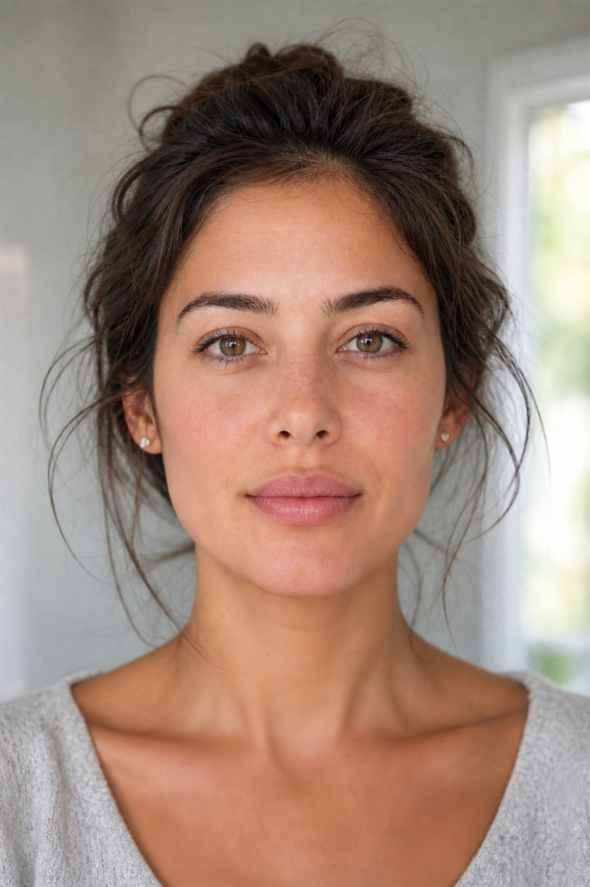
ВнешностьКак увеличить губы на фото онлайн через ИИ
ИИ деликатно увеличивает губы на фото, сохраняя черты лица, выражение, кожу и естественный вид. Подходит для работы онлайн с ИИ и нейросетью.
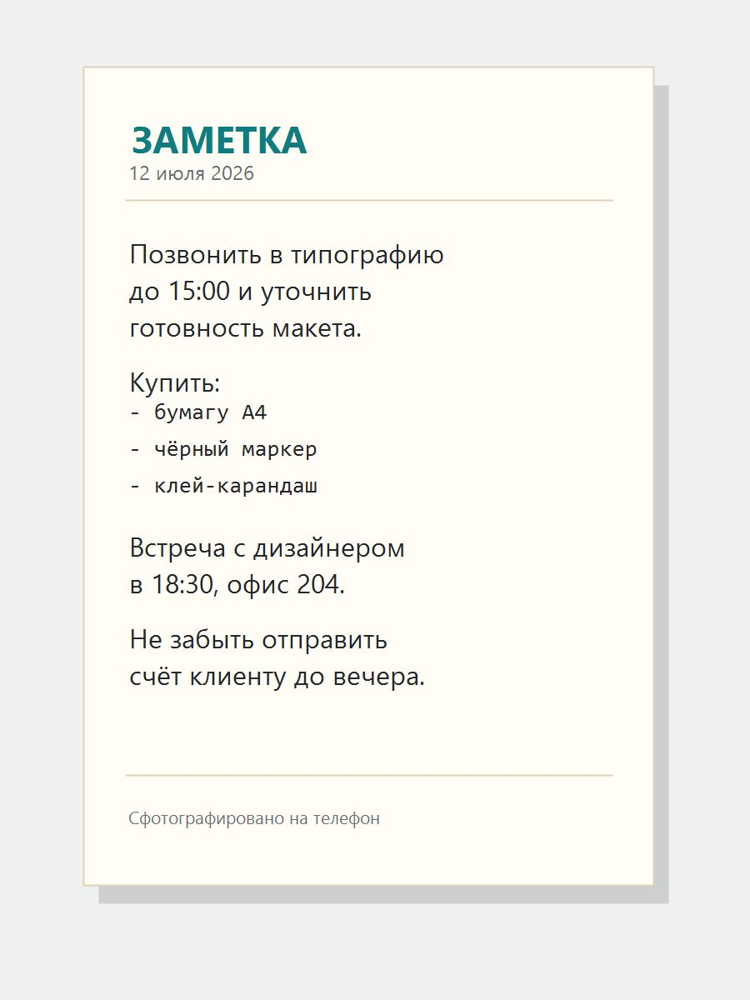
Анализ фотоКак получить текст по фото с помощью ИИ
ИИ распознаёт текст на фото документа, заметки, вывески или скриншота и отдаёт его в удобном виде для копирования. Подходит для работы онлайн с ИИ и нейросетью.
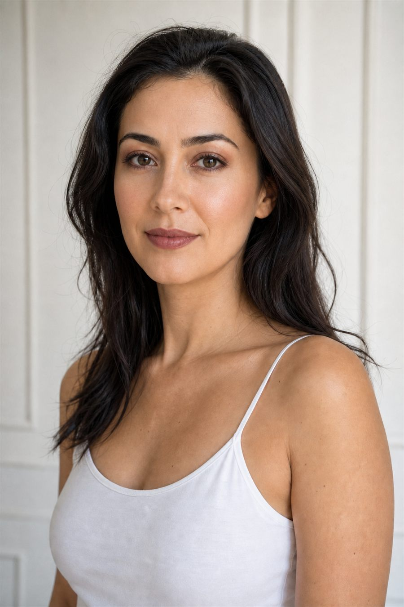
ВнешностьКак изменить макияж на фото через нейросеть
ИИ примеряет новый макияж на фото, сохраняя черты лица, кожу, волосы, фон и естественный вид. В промпте есть плейсхолдер для выбранного макияжа. Подходит для работы онлайн с ИИ и нейросетью.
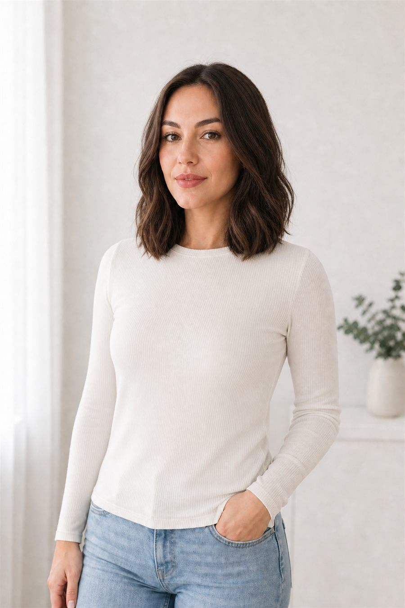
ВнешностьКак изменить прическу на фото с помощью нейросети
ИИ примеряет новую причёску на фото, сохраняя лицо, цвет волос, фон, свет и естественный вид. В промпте есть плейсхолдер для выбранной причёски. Подходит для работы онлайн с ИИ и нейросетью.
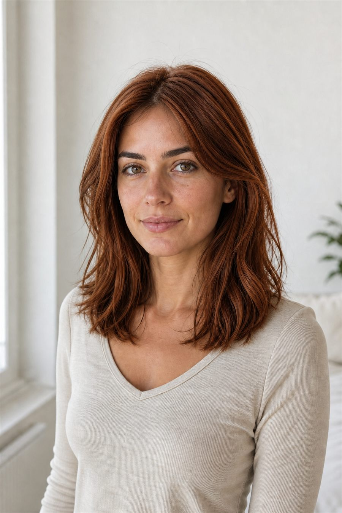
ВнешностьКак изменить цвет волос на фото через ИИ
ИИ меняет только цвет волос на фото, сохраняя лицо, причёску, объём, текстуру и естественный свет. В промпте есть плейсхолдер для нового цвета. Подходит для работы онлайн с ИИ и нейросетью.
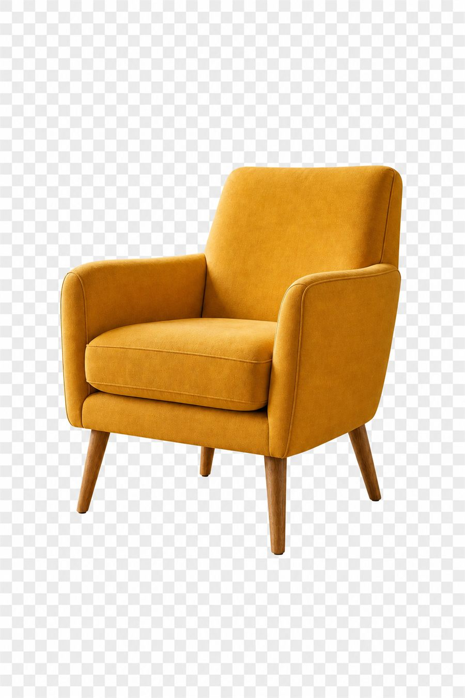
ФотоКак вырезать объект с фото с помощью ИИ
ИИ аккуратно вырезает нужный объект с фото, отделяет его от фона и сохраняет чистые края для дизайна, коллажа или карточки товара. Подходит для работы онлайн с ИИ и нейросетью.
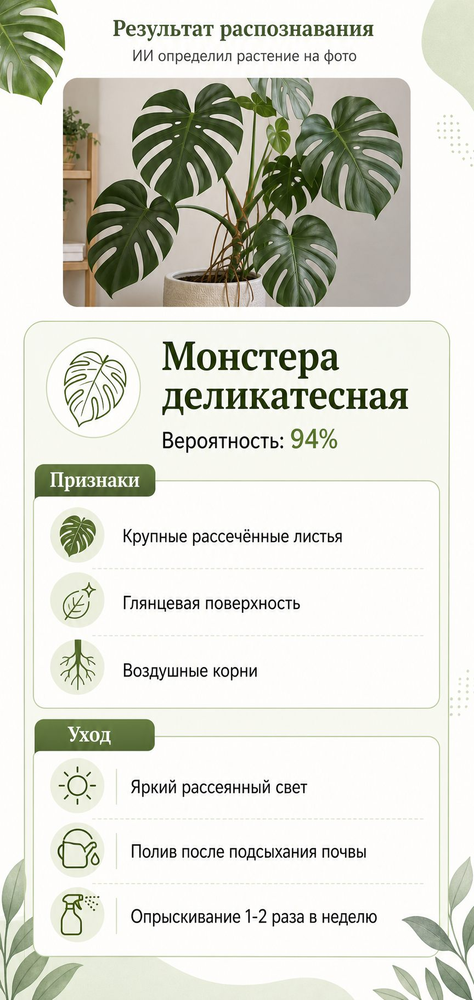
Анализ фотоКак определить растение по фото через нейросеть
ИИ определяет растение по фото, показывает вероятное название, признаки и базовые советы по уходу. Готовая инструкция, RU и EN промпты и пример результата. Подходит для работы онлайн с ИИ и нейросетью.
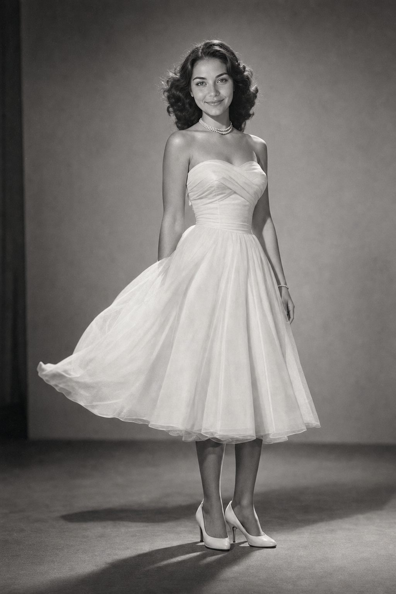
ФотоКак заменить лицо на фото через ИИ
ИИ аккуратно переносит лицо на другое фото с совпадением света, ракурса и тона кожи. Готовая инструкция, RU и EN промпты и пример результата. Подходит для работы онлайн с ИИ и нейросетью.
 Товары
Товары
Как создать продающее описание товара по фото с помощью ИИ
ИИ распознаёт товар на фото и превращает его характеристики в продающее описание для карточки, маркетплейса или объявления. Подходит для работы онлайн с ИИ и нейросетью.
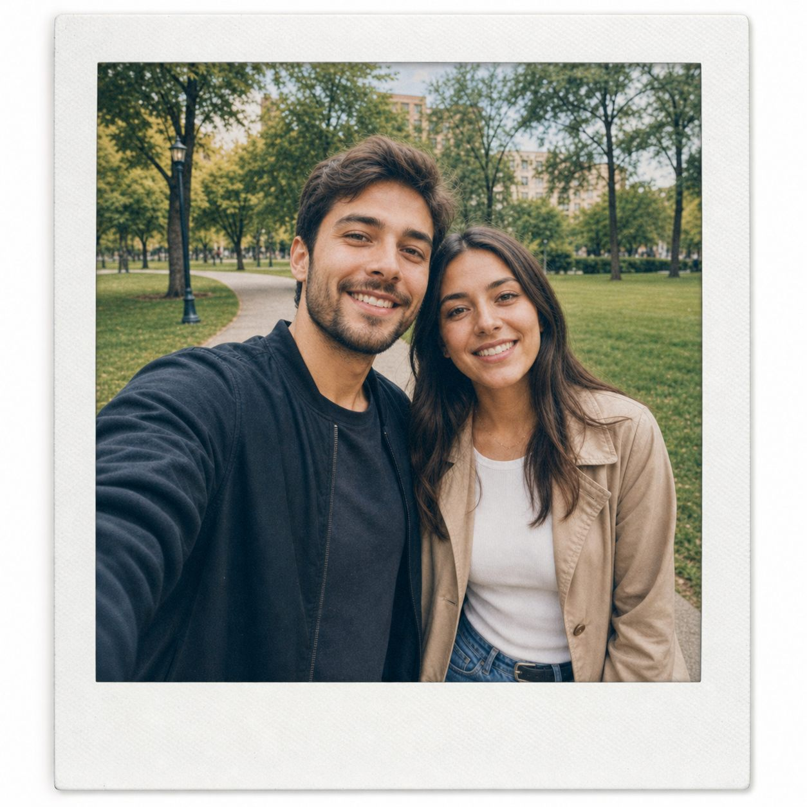
ФотоКак сделать фото как полароид через нейросеть
ИИ превращает обычный снимок в полароидную карточку с мягким винтажным настроением. Готовая инструкция, RU и EN промпты и пример результата. Подходит для работы онлайн с ИИ и нейросетью.
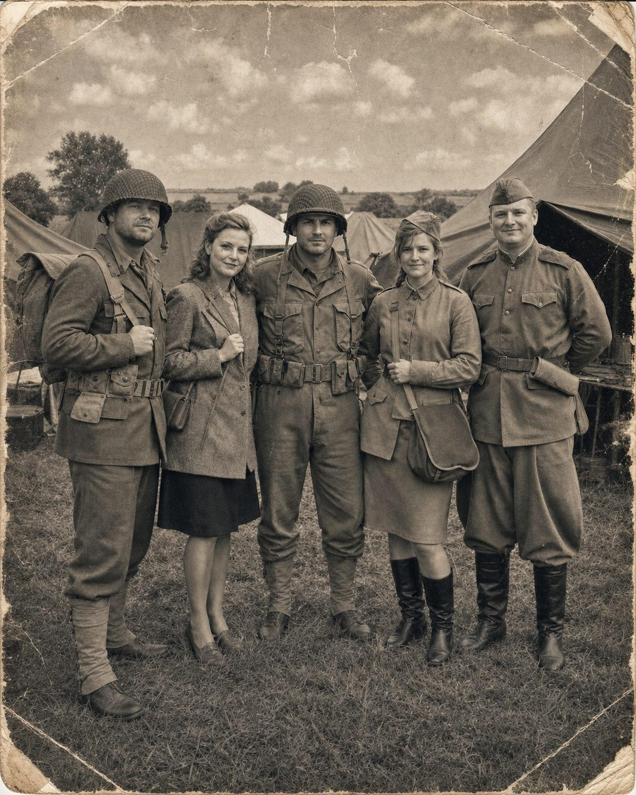
ФотоКак состарить фото онлайн через ИИ
ИИ показывает, как человек может выглядеть старше, сохраняя узнаваемые черты лица. Готовая инструкция, RU и EN промпты и пример результата. Подходит для работы онлайн с ИИ и нейросетью.
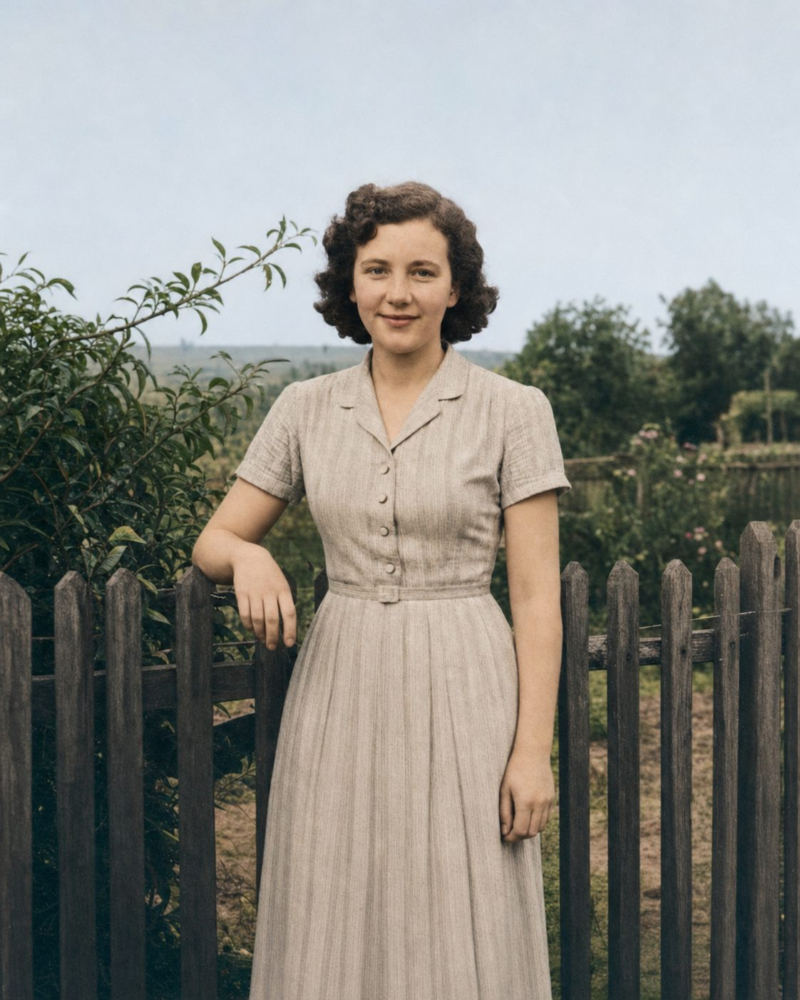
ФотоКак улучшить качество фото с помощью нейросети
ИИ повышает резкость, чистит шум, выравнивает свет и делает фото аккуратнее. Готовая инструкция, RU и EN промпты и пример результата. Подходит для работы онлайн с ИИ и нейросетью.
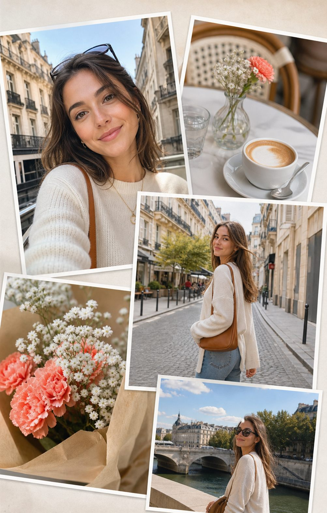
ФотоКак создать коллаж из нескольких фото через ИИ
ИИ объединяет несколько снимков в аккуратный коллаж с единым стилем. Готовая инструкция, RU и EN промпты и пример результата. Подходит для работы онлайн с ИИ и нейросетью.
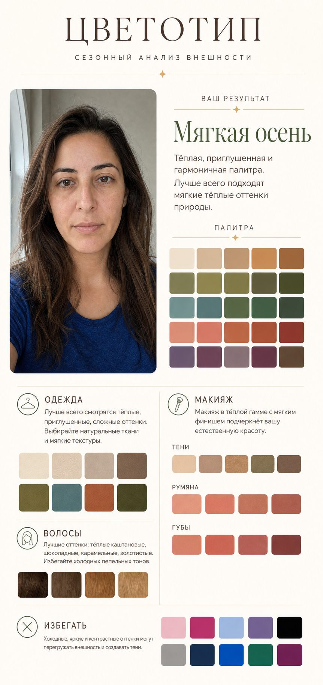
ВнешностьКак определить свой цветотип по фото через нейросеть
ИИ анализирует внешность по фото и собирает красивую инфографику в журнальном стиле: сезонный цветотип, подтип, палитра, лучшие оттенки, цвета для макияжа, волос и одежды. Подходит для работы онлайн с ИИ и нейросетью.
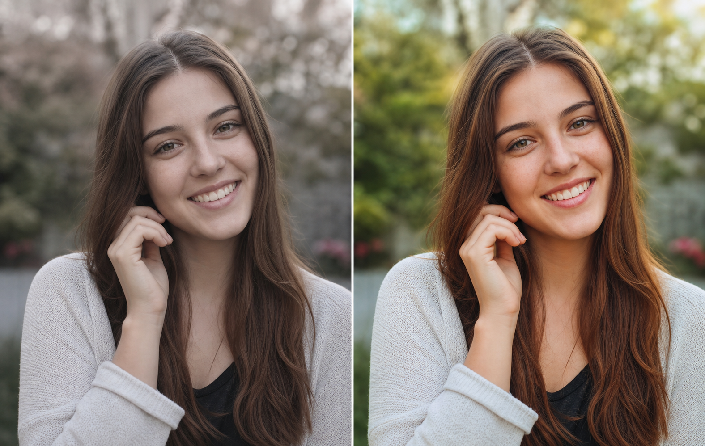
ФотоКак редактировать фото онлайн с помощью ИИ
ИИ аккуратно исправляет фото: свет, фон, мелкие дефекты и общий вид снимка. Готовая инструкция, RU и EN промпты и пример результата. Подходит для работы онлайн с ИИ и нейросетью.
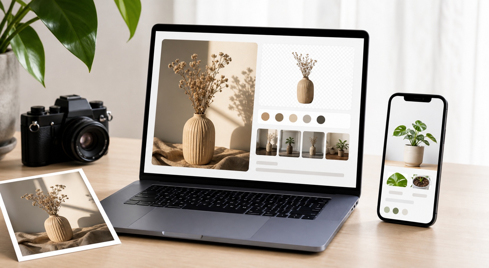
Анализ фотоКак получить описание изображения с помощью ИИ
ИИ анализирует картинку и выдаёт понятное описание: что изображено, какие объекты есть в кадре, какая сцена, настроение и важные детали. Подходит для работы онлайн с ИИ и нейросетью.
 Фото
Фото
Как похудеть на фото с помощью ИИ
Загрузи фото — нейросеть аккуратно скорректирует позу, посадку одежды и силуэт, чтобы человек визуально выглядел стройнее без грубой деформации. Подходит для работы онлайн с ИИ и нейросетью.
 Фото
Фото
Как отбелить зубы на фото через ИИ
Загрузи портрет с улыбкой — GPT Image 2 или Nano Banana PRO аккуратно осветлит зубы на фото, сохранив естественный цвет эмали, лицо и освещение. Подходит для работы онлайн с ИИ и нейросетью.
 Внешность
Внешность
Как узнать характер по внешности с помощью нейросети
Загрузи фото человека — GPT Image 2 проанализирует взгляд, мимику, позу и стиль, и создаст инфографику с психологической интерпретацией. Подходит для работы онлайн с ИИ и нейросетью.
 Подарки
Подарки
Как сделать фото с собой в детстве на день рождения через ИИ
Загрузи детское фото и актуальное — нейросеть объединит их в одну сцену. 5 готовых промтов для GPT Image 2 и Nano Banana PRO. Подходит для работы онлайн с ИИ и нейросетью.
 Внешность
Внешность
Как определить форму лица с помощью нейросети
Загрузи фото анфас — GPT Image 2 определит форму лица и подберёт рекомендации по причёске, очкам и макияжу. Подходит для работы онлайн с ИИ и нейросетью.
 Подарки
Подарки
Как сделать карточку футболиста с помощью нейросети
5 готовых промтов для генерации коллекционной карточки футболиста через ИИ — от стикера Панини до голографической премиум-карточки. Подходит для работы онлайн с ИИ и нейросетью.
 Внешность
Внешность
Как подобрать очки с помощью нейросети
Два промта для GPT Image 2 — инфографика с рекомендациями по оправам и коллаж с примеркой 6 вариантов прямо на твоё фото. Подходит для работы онлайн с ИИ и нейросетью.
 Подарки
Подарки
Как сделать фото на выпускной с помощью нейросети
5 готовых промтов для создания красивых выпускных фото через ИИ — от Алых Парусов до золотого заката. Загрузи своё фото и выбери фон. Подходит для работы онлайн с ИИ и нейросетью.
 Внешность
Внешность
Как узнать свой типаж по Кибби с помощью нейросети
Загрузи фото в полный рост — GPT Image 2 определит твой типаж из 13 по системе Кибби и создаст инфографику с рекомендациями по стилю, тканям и украшениям. Подходит для работы онлайн с ИИ и нейросетью.
 Подарки
Подарки
Как оживить детский рисунок с помощью нейросети
Два шага: сначала подготовь рисунок в Nano Banana PRO, затем оживи его в Kling. Готовые промты для каждого этапа — RU и EN. Подходит для работы онлайн с ИИ и нейросетью.
 Промпты
Промпты
Как узнать свой типаж по Ларсон с помощью нейросети
Загрузи фото в полный рост — GPT Image 2 определит твой типаж из 20 по системе Двин Ларсон и создаст премиальную инфографику в стиле Vogue с рекомендациями по стилю. Подходит для работы онлайн с ИИ и нейросетью.
 Фото
Фото
Как сделать фотографию на паспорт через ИИ
Готовые промты для создания документальных фото по вашей фотографии. Внутренний паспорт РФ и загранпаспорт (ИКАО). Подходит для работы онлайн с ИИ и нейросетью.
 Фото
Фото
Как удалить фон с фотографии с помощью нейросети
Загрузи фото — Nano Banana PRO аккуратно удалит фон и оставит объект на прозрачном фоне, готовым для использования в дизайне. Подходит для работы онлайн с ИИ и нейросетью.
 Фото
Фото
Как сделать анализ подписи с помощью нейросети
Загрузи фото своей подписи — GPT Image 2 проанализирует её и создаст инфографику с характеристиками личности по методам графологии. Подходит для работы онлайн с ИИ и нейросетью.